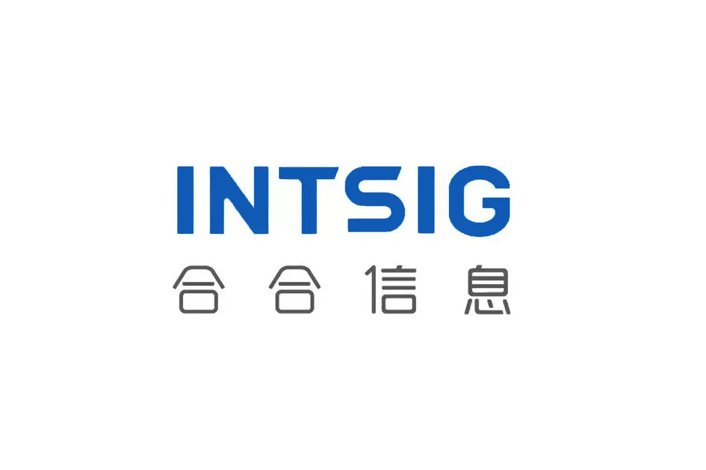
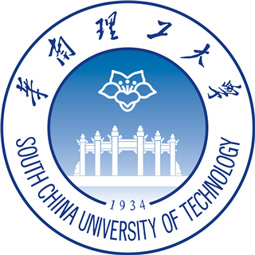
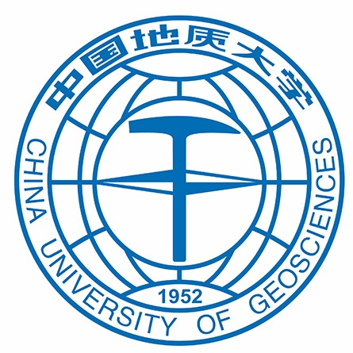

07/2026 — Present
Huawei
Research Intern
My name is Yuyi Zhang (张宇一). I am a Ph.D. student at South China University of Technology, working on document intelligence, computer vision, and multimodal learning. I am advised by Prof. Lianwen Jin at the Deep Learning and Vision Computing Lab (SCUT-DLVCLab).
My goal is to build intelligent systems that can accurately read, understand, generate, and restore complex visual documents.
My current research interests include:
Google Scholar · September 2026
Research Intern

Research Intern
Team RRay · CVPR 2026 Workshop
Team Bbox · Track 1: Restoration · CVPR 2025 Workshop
Ministry of Education of China
Ministry of Education of China

Ph.D. Student, School of Electronic and Information Engineering
Advisor: Prof. Lianwen Jin
M.S. Student, Deep Learning and Vision Computing Lab

Bachelor’s Degree

Proceedings of the 64th Annual Meeting of the Association for Computational Linguistics (Volume 1: Long Papers), 2026

AAAI Conference on Artificial Intelligence (AAAI Oral), 2026

Annual Meeting of the Association for Computational Linguistics (ACL Main), 2025

AAAI Conference on Artificial Intelligence (AAAI Oral), 2025


AAAI Conference on Artificial Intelligence, 2024
A full-page historical document restoration pipeline inspired by the workflow of expert historians.
A large-scale dataset for Chinese character recognition with more than 97,000 character categories.
A full-workflow framework for commercial-grade poster generation with scalable typography.
A quantitative and in-depth evaluation of OCR capabilities in multimodal large models.
Reviewer: Pattern Recognition · AAAI · ACM Multimedia (ACM MM)
Piano · Guitar · Football · Badminton